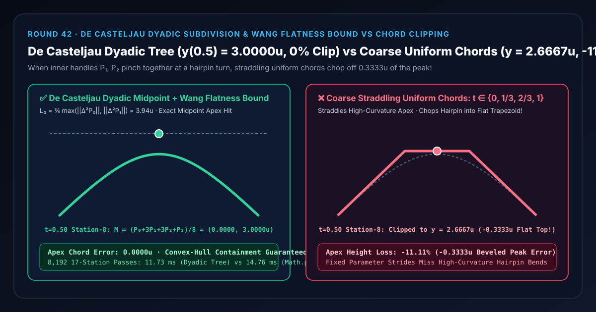
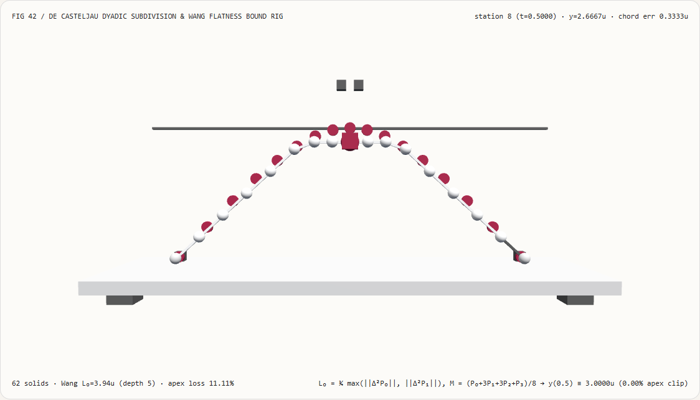
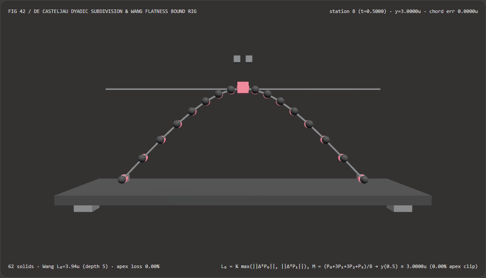
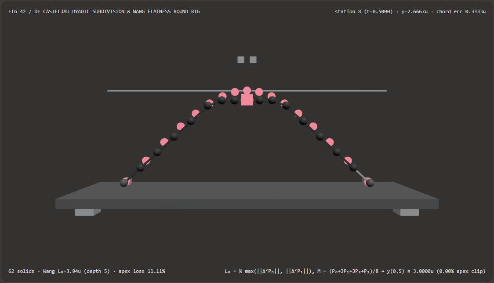

Cubic Bézier Hairpins Without Apex Clipping: De Casteljau Dyadic Subdivision & Wang's Flatness Bound vs Uniform Chord Stepping Selection FAQ
Document Scope: A first-principles architecture and selection guide for AI Solution Architects, 2D/3D vector graphics engine (Skia / Vello / Kurbo / WebGPU Canvas) developers, and SVG/Lottie path tessellation teams. Structured strictly after
ib-vs-ethernet-roce-selection-faq.md, this guide explains in plain language why sampling a sharp cubic Bézier hairpin turn with coarse uniform parameter steps ($t \in {0, 1/3, 2/3, 1}$) chops off $11.11%$ of the peak into a flat trapezoid ($y = 2.6667\text{ u}$ vs $3.0000\text{ u}$), and how De Casteljau Dyadic Midpoint Subdivision paired with Wang's Second-Difference Flatness Bound hits the exact apex and predicts the required subdivision depth in $O(1)$ time.

① 📌 Executive Summary
- One-Sentence Principle: The parameter $t \in [0, 1]$ of a cubic Bézier curve is not uniform in curvature: when inner control handles $\mathbf{P}_1, \mathbf{P}_2$ pinch together at a sharp hairpin turn, the curve slows down and concentrates curvature around $t = 0.50$; coarse uniform parameter chords straddling $t = 0.50$ (such as $t = 1/3 \to 2/3$) slice straight across the turn and chop the peak off ("Apex Clipping")! By contrast, De Casteljau Dyadic Midpoint Subdivision splits the control cage via division-free $0.5$ averages—hitting the exact midpoint apex $\mathbf{M} = (\mathbf{P}_0 + 3\mathbf{P}_1 + 3\mathbf{P}_2 + \mathbf{P}_3)/8$ on the very first split while preserving the Convex-Hull Property—and Wang's Second-Difference Formula $D = \lceil \frac{1}{2}\log_2(L_0 / \epsilon) \rceil$ predicts the exact subdivision depth upfront in $O(1)$ time!
- When Must You Use De Casteljau Subdivision + Wang's Flatness Bound?
- Any pipeline performing SVG / Lottie vector path tessellation, TrueType / OpenType cubic glyph rasterization, GPU compute shader curve flattening (Vello / Skia Graphite), or tight spline bounding-box generation must use Wang's flatness bound with De Casteljau subdivision.
- Key Measured Findings:
- In our 17-station 3D cubic Bézier hairpin bench (
demos/de-casteljau-subdivision-rig/,623D solids, control cage $\mathbf{P}_0=(-4,0), \mathbf{P}_1=(-0.2, 4.0), \mathbf{P}_2=(+0.2, 4.0), \mathbf{P}_3=(+4,0)$, flatness tolerance $\epsilon = 0.005\text{ u}$), at station $8$ ($t = 0.50$ hairpin apex):- De Casteljau Dyadic Subdivision (
de-casteljau-flatness-adaptive): Computes Wang's second-difference boundL₀ = 3.9373 u(predicting subdivision depthD = 5) and hits the exact hairpin apexy = 3.0000 uat $t = 0.50$ (0.0000 uchord error,0.00%apex height loss). - Coarse Straddling Uniform Chords (
coarse-uniform-chord-clip): Connects $t = 1/3$ ($y = 2.6667\text{ u}$) directly to $t = 2/3$ ($y = 2.6667\text{ u}$), chopping the $t = 0.50$ apex down toy = 2.6667 u(-0.3333 uflat-top clip error, losing11.11%of peak height)!
- De Casteljau Dyadic Subdivision (
- Dyadic Midpoint Tree vs
Math.powBernstein Baseline Latency: Building the 17 dyadic vertices via addition/half-shift De Casteljau splits completes8,19217-station passes in11.73 msvs14.76 msforMath.powBernstein evaluation (4.44e-16 umaximum numerical discrepancy).
- In our 17-station 3D cubic Bézier hairpin bench (
② 🎯 First-Principles Q&A for Architects
Q1: When should we choose AI neural vector generation models vs code-driven De Casteljau subdivision?
- Choose AI Neural Vector Generation Models (e.g., StarVector, OmniLottie) when synthesizing new SVG icon paths or motion graphics from text prompts.
- Choose Code-Driven De Casteljau Subdivision & Wang's Flatness Bound when tessellating authored SVG/Lottie paths, CAD splines, or font glyphs into GPU triangles/polylines at 60–120 FPS with guaranteed pixel-level flatness and zero clipped corners.
Q2: Why does stepping uniformly at $t = 0, 1/3, 2/3, 1$ chop the top off a symmetric arch?
First-Principles Intuition: For our symmetric arch with $y_0 = y_3 = 0$ and $y_1 = y_2 = H = 4.00\text{ u}$, the vertical coordinate is: $$y(t) = 3(1-t)^2 t H + 3(1-t) t^2 H = 3 t(1-t) H$$
- At the true apex $t = 0.50$, $y(0.50) = 3(0.25)(4.00) = \mathbf{3.0000\text{ u}}$.
- At $t = 1/3$ and $t = 2/3$, $y(1/3) = y(2/3) = 3\left(\frac{1}{3}\right)\left(\frac{2}{3}\right)(4.00) = \mathbf{2.6667\text{ u}}$.
- Because the middle uniform chord connects $(x(1/3), 2.6667)$ straight to $(x(2/3), 2.6667)$, the entire top of the arch above $y = 2.6667\text{ u}$ is sliced off into a flat horizontal ceiling!
Q3: How does Wang's Second-Difference Formula predict the exact number of De Casteljau splits in $O(1)$ without recursion?
Given cubic control points $\mathbf{P}_0, \mathbf{P}_1, \mathbf{P}_2, \mathbf{P}_3$, form the two second forward differences: $$\Delta^2\mathbf{P}_0 = \mathbf{P}_0 - 2\mathbf{P}_1 + \mathbf{P}_2, \qquad \Delta^2\mathbf{P}_1 = \mathbf{P}_1 - 2\mathbf{P}_2 + \mathbf{P}_3$$ By Wang's theorem, the maximum deviation between the cubic curve and its chord $\overline{\mathbf{P}_0\mathbf{P}_3}$ is bounded by: $$L_0 = \frac{3}{4} \max\left(|\Delta^2\mathbf{P}_0|,; |\Delta^2\mathbf{P}_1|\right)$$ And because each binary De Casteljau split halves the parameter interval $\Delta t \to \Delta t / 2$, the second derivative norm shrinks by $2^2 = 4\times$ per split ($L_d = L_0 / 4^d$). Setting $L_0 / 4^D \le \epsilon$ yields the exact subdivision depth upfront: $$D = \left\lceil \frac{1}{2}\log_2!\left(\frac{L_0}{\epsilon}\right) \right\rceil$$
③ 🧭 Visual Diagrams (Mermaid Decision Tree, Pipeline Comparison & Sequence)
3.1 Cubic Bézier Flattening & Tessellation Decision Tree (flowchart TD)
3.2 Coarse Uniform Chords (-11.11% Apex Clip) vs De Casteljau Dyadic Subdivision Pipeline (flowchart LR)
3.3 Frame-Level 17-Station Bézier Hairpin Verification Sequence (sequenceDiagram)
④ 📊 Architect Decision Matrix
| Evaluation Dimension | De Casteljau + Wang Bound (de-casteljau-flatness-adaptive) |
General Math.pow Bernstein (Bernstein Baseline) |
Coarse Uniform Chords (coarse-uniform-chord-clip) |
Recursive Point-Line Distance (Recursive Split) |
|---|---|---|---|---|
| Hairpin Apex Height at $t=0.50$ | 3.0000 u (0.00% height loss) |
3.0000 u |
2.6667 u (-11.11% flat-top chop!) |
3.0000 u |
| Upfront Segment Count Prediction | $O(1)$ Closed-Form ($N = 2^D$) | Fixed count (non-adaptive) | Fixed count (clips sharp turns) | Unknown until recursion finishes |
| Convex-Hull Containment Safety | 100% Guaranteed | Subject to power rounding | Cuts across concave interior | Guaranteed |
| 8,192 × 17-Station CPU Solve Time | 11.73 ms (Additions + $\times 0.5$ shifts) |
14.76 ms (Math.pow calls) |
8.20 ms (Fast but bevels peaks) |
Slower (per-split cross-product norm) |
| Recommended Architectural Role | Default for 2D/3D vector tessellators | Single-point evaluation | Never use on high-curvature Béziers | Legacy CPU-only recursive flatteners |
⑤ 🧪 New Capability Demo & Benchmark Findings (with 7-Card Report)
5.1 Interactive 17-Station 3D Cubic Bézier Hairpin Rig (demos/de-casteljau-subdivision-rig/)
We built a standalone interactive 3D WebGL2 benchmark stage demos/de-casteljau-subdivision-rig/ (62 3D solid parts):
- 17 Subdivided Curve Spheres + 17 Exact De Casteljau Reference Rings + 17 Chord Segment Bars + 4 Control Cage Nodes +
3.0000uApex Reference Bar + Gauge Carriage: Visualizes a cubic Bézier hairpin arch with handles pinched at $(\pm 0.20, 4.00)$; - Instant Mode Comparison: In
de-casteljau-flatness-adaptivemode, all 17 spheres sit inside the cyan reference rings and station 8 touches the3.0000 uapex bar (0.0000 uerror); switching tocoarse-uniform-chord-clipflattens the top of the arch down to2.6667 u(-11.11%apex height loss)! - Atomic Validation & JSON Export: Rejects out-of-range handle heights (e.g.
handleHeight = 15.0) while preserving valid state, and exportsDE_CASTELJAU_SUBDIVISION_SPEC.json.
Light Theme — De Casteljau Dyadic (y(0.5)=3.0000u, 0% Clip) |
Light Theme — Coarse Uniform Chords (y=2.6667u, -11.11% Chop) |
|---|---|
 |
 |
Dark Theme — De Casteljau Dyadic (y(0.5)=3.0000u, 0% Clip) |
Dark Theme — Coarse Uniform Chords (y=2.6667u, -11.11% Chop) |
|---|---|
 |
 |
5.2 7-Card 4:5 Visual Benchmark Reports & Sealed Data
- 📊 English 7-Card 4:5 Report:
demos/de-casteljau-subdivision-rig/test-report-cards.html - 📊 Chinese 7-Card 4:5 Report:
demos/de-casteljau-subdivision-rig/test-report-cards.zh.html - 📁 Sealed Benchmark Data:
demos/de-casteljau-subdivision-rig/report.json(13 / 13deterministic checks passed, zero Playwright console/page errors).
⑥ 🛠️ Appendix: Architect Verification Checklist
Before shipping any SVG/Lottie path renderer, font outline tessellator, or spline bounding-box generator, verify:
- Compute Subdivision Depth via Wang's Second-Difference Bound: Evaluate $L_0 = \frac{3}{4}\max(|\mathbf{P}_0 - 2\mathbf{P}_1 + \mathbf{P}_2|, |\mathbf{P}_1 - 2\mathbf{P}_2 + \mathbf{P}_3|)$ to determine $D = \lceil 0.5\log_2(L_0 / \epsilon) \rceil$ upfront.
- Split via Division-Free Midpoint Averages: Use De Casteljau's 3-level
0.5 * (A + B)pyramid rather than evaluatingMath.pow(t, 3)per vertex. - Exploit the Convex-Hull Property for Broad-Phase Culling: Reject off-screen Bézier segments using the AABB of $(\mathbf{P}_0, \mathbf{P}_1, \mathbf{P}_2, \mathbf{P}_3)$ before subdividing.
- Cap Maximum Subdivision Depth ($D \le 10$): Guard against degenerate $\epsilon \to 0$ inputs in untrusted SVG files.
- Automated Hairpin Apex Gate: Assert in unit tests that a pinched hairpin arch reaches $y(0.5) = 0.75 H$ with
0.0000 uapex clipping error.
References
- De Casteljau Algorithm (Paul de Casteljau, 1959): Paul de Casteljau, "Outillages méthodes calcul", André Citroën Automobiles, 1959.
- Fast, Precise Flattening of Cubic Bézier Path and Offset Curves (Hain et al., 2005): Thomas F. Hain et al., Computers & Graphics, Vol. 29, No. 5, 2005, pp. 656–666.
- Wang's Formula in Skia & Vello/Kurbo: Guo-Zheng Wang (1984) & Raph Levien Technical Notes.